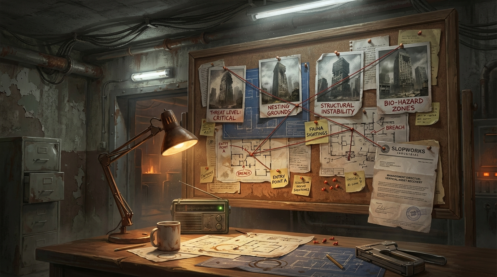
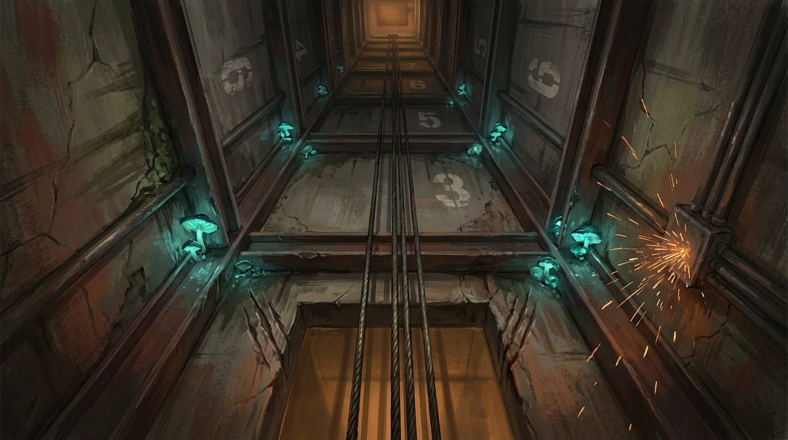
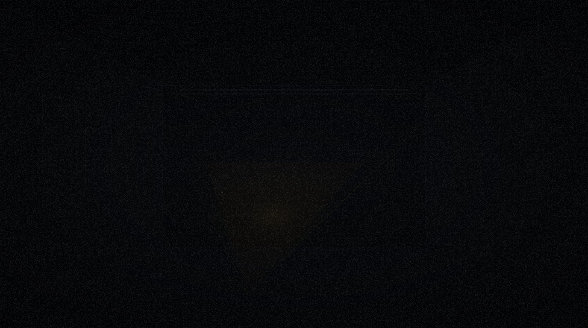
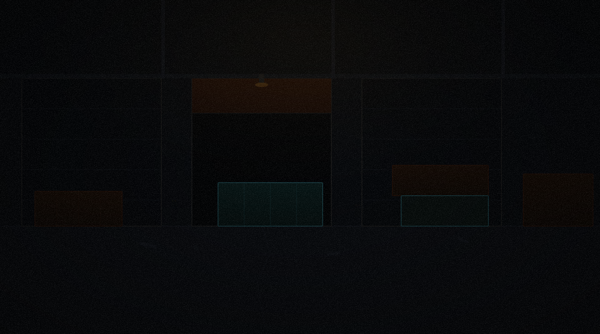
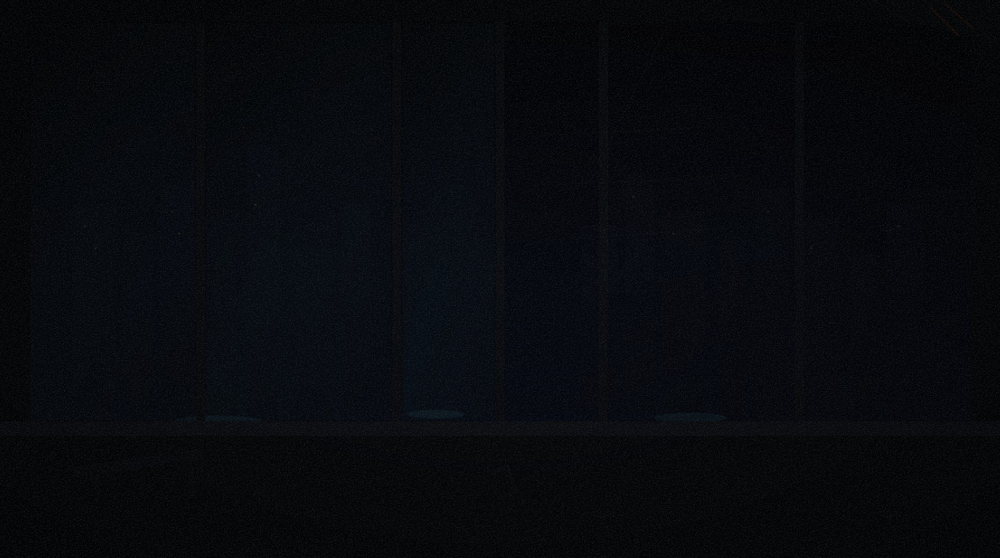
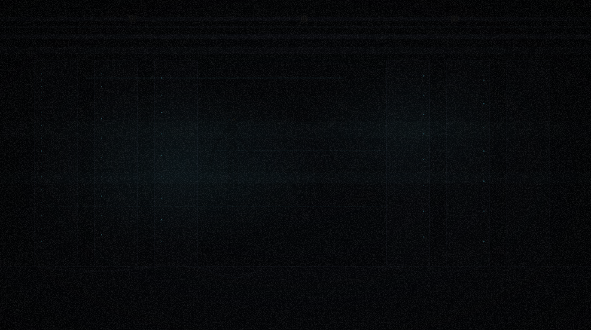
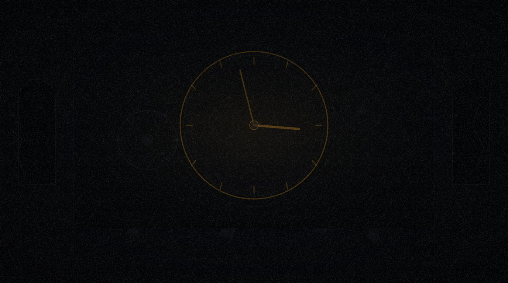
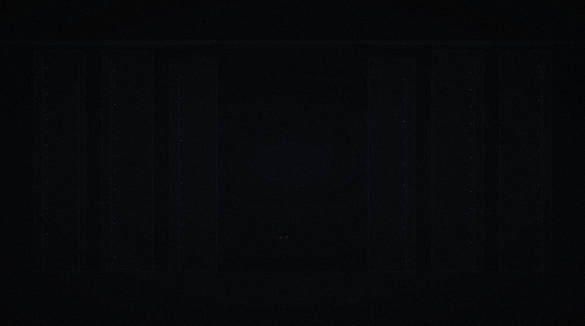
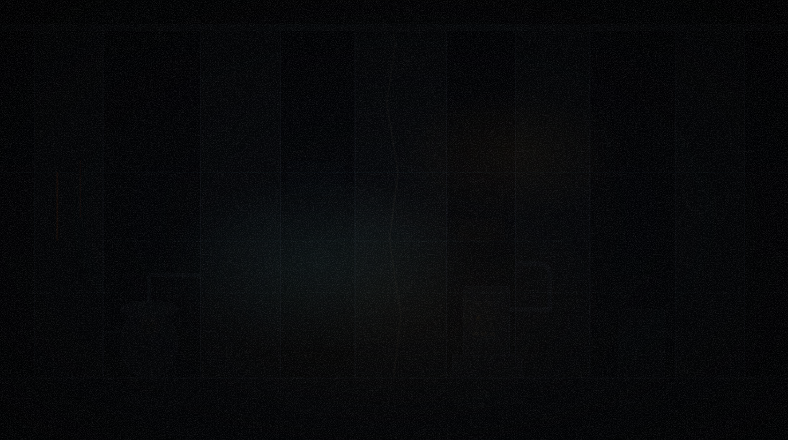
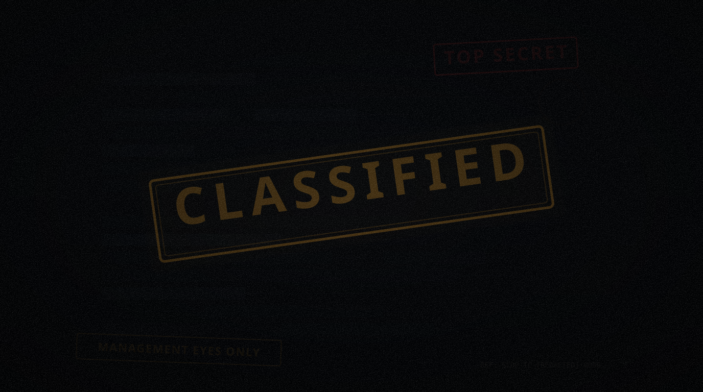

Every building is a contract. Every contract has a ceiling.

Management provides a contract progression tree — not random missions, but a structured climb through increasingly dangerous buildings. Each contract shows intel: threat level, suspected fauna, guaranteed loot, recommended squad size. You choose which to take, but you can't skip tiers.
15 contracts across 6 buildings — 12 active, 3 classified.
"...none of the current occupants have valid leases."
"...a more direct approach to hostile takeovers."

"Concern is not within my operational parameters."

"Hazard compensation has never been collected."

"The parameters have been adjusted to include 'no light whatsoever.'"

"It is arriving very aggressively."

"The views remain exceptional. The executives do not."

"Please disregard any sub-basement levels you may encounter."

"Degraded to an accuracy of plus or minus several decades."

"SLOP strongly recommends not reading them."
"SLOP's geological surveys were conducted by SLOP, so their reliability is open to interpretation."

"It continues to not exist. You are not currently standing in it."

Contract details pending Management authorization.
Contract details pending Management authorization.
Contract details pending Management authorization.
Spine contracts drive the narrative. Branches reward mastery.
SPINE (required) BRANCHES (optional) ────────────── ────────────────── 30 Rock T1 // Low ──→ Night shift (30 Rock, T1) │ Loading docks (MetLife, T1) ▼ MetLife T1 // Moderate ──→ Penthouse (MetLife, T1) │ Sublevel B (30 Rock, T2) │ Empire State: Lobby (future) ▼ Woolworth T2 // High ──→ Clock tower (Woolworth, T2) │ Server farm (MetLife, T2) │ Chrysler: Observatory (future) ▼ One World T2→3 // Extreme ──→ The crypt (Woolworth, T3) Sublevel zero (One World, T3) Empire State: Antenna (future)
Branch contracts introduce conditions that spine contracts don't prepare you for.
Power out, flashlight only. Reduced visibility makes stalkers more dangerous. Found in: Night shift, Server farm.
HUD glitches, compass unreliable, SLOP communications distorted. Biomech hybrids cause it. Found in: Sublevel B, Server farm.
Damage over time in affected areas. Gas mask required for extended exposure. Spore crawlers emit them. Found in: The crypt.
Knockback near edges, reduced accuracy at range. Roof and antenna combat. Found in: Penthouse, Chrysler: Observatory, Empire State: Antenna.
Floor sections collapse under weight or after time. Environmental timer pressure. Found in: Clock tower, Sublevel zero, Empire State: Antenna.
Every tower uses the same elevator checkpoint framework. Clear floor milestones to unlock checkpoints. When a friend joins mid-contract, they spawn at floor 1 and ride the elevator up to your checkpoint — a brief solo gauntlet that orients them before arrival. No special rejoin logic. The elevator is the mechanic.
The tower is the unlock gate. Alternate factory recipes, building blueprints, weapon upgrade components, and narrative fragments — all from tower loot. You can't build a better factory without it. You can't survive harder waves without factory gear. The three pillars form a closed loop.